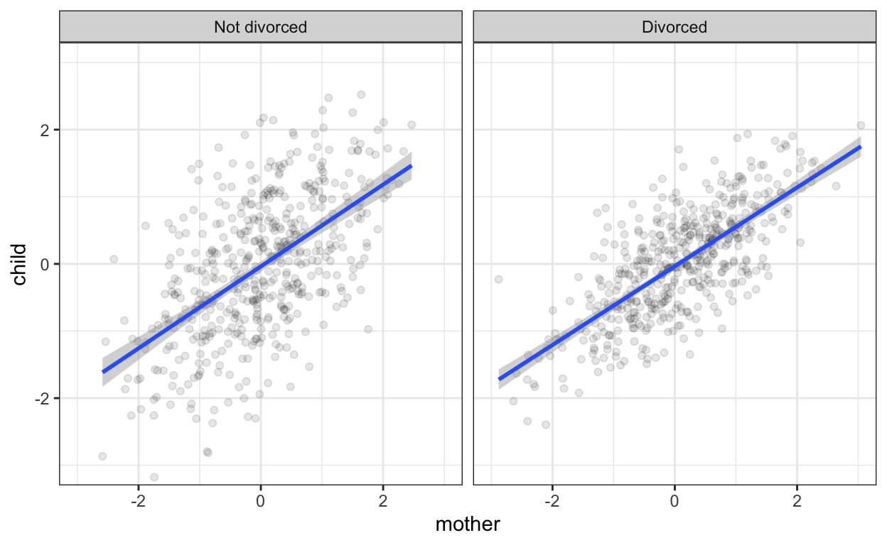
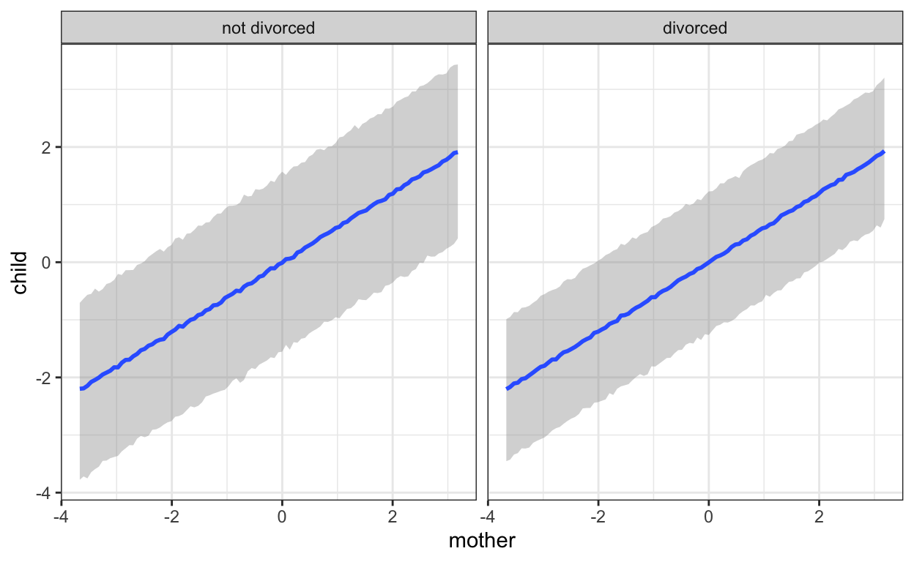

And how would you test that?
Yesterday, I sat down with Lisa Reiber, who is doing her master’s thesis with me. She is working on the question of the transmission of risk preferences in families. Many of the potential predictions we hope to test involve mean level changes (e.g., children of divorcees will be more risk-averse because they learned the world is less certain). In other cases, once we get down to which models we want to test, it is a lot less clear.
One question which I have struggled with in the past often comes up when the phrase “strength of influence” comes up. For example, some theories say that mothers have a stronger influence on their children’s traits if the fathers are absent. Verbally, I have also seen this expressed “play a bigger role”. Intuitively, how would you test this?
We decided we should make a quick data-generating model to clarify what we mean when we talk about this.1
We start by generating families, half of which are divorced. Mothers and fathers aren’t mating assortatively in this example.
library(tidyverse)
library(brms)
theme_set(theme_bw())
fam <- tibble(
mother = rnorm(1000),
father = rnorm(1000),
divorce = rep(c(0,1), each = 500)
)So far, so good. We have a 1000 couples - let’s make children. We’ll assume all transmission is through parenting, which these hypothetical parents share equally, not genetics. Hence, in two-parent families, they share parenting equally and both have the same influence on their child’s trait.
If there was no divorce, we would expect the following. We have equal contributions by each parent (0.6 * parent). Despite all the power of parenting in this hypothetical world, children turn out somewhat differently from their parents, which is reflected by the final term 0.6 * rnorm(1000).
fam <- fam %>%
mutate(
child = 0.6 * mother + 0.6 * father + 0.6 * rnorm(1000)
)What happens in case of divorce? In divorced families, fathers have absolutely no influence.2 One thing that is pretty clear, is that the term for the father’s influence should be zero in our model ((1 - divorce) * 0.6 * father). And isn’t it logical that the mother’s regression weight should hence go up by the same amount (divorce + 1) * 0.6 * mother?
fam <- fam %>%
mutate(
child = (divorce + 1) * 0.6 * mother + (1 - divorce) * 0.6 * father + 0.6 * rnorm(1000)
)On thinking about this, we reconsidered. Does having a stronger influence mean that
This would mean that divorcee’s children are actually less similar to their mothers in absolute terms. No, we decided by “having a stronger influence” in this case, we actually meant simply that another systematic influence (the father) was removed, so the mothers’ contribution to differences in their children would be bigger and the children would be more similar to them. This is a simpler model. We only say that the contribution by the father is removed (1 - divorce) * 0.6 * father.
fam <- fam %>%
mutate(
child = 0.6 * mother + (1 - divorce) * 0.6 * father + 0.6 * rnorm(1000)
)If you think the second model makes more sense, you would probably tend to test an interaction between mother’s trait and divorce. But how would you test the third scenario? When there is distinct groups, I have been trained to think of this as a difference in correlations (similarity, variance explained). I didn’t really have a lot of experience teaching this particular nuance. I think I left my own graduate statistics classes thinking that correlations are basically regressions with the variables standardised.
Now, really, this is the model we would want to test, the data-generating model.
summary(brm(child ~ mother + divorce * father, data = fam, cores = 4, file = "dgm"))
Family: gaussian
Links: mu = identity; sigma = identity
Formula: child ~ mother + divorce * father
Data: fam (Number of observations: 1000)
Samples: 4 chains, each with iter = 2000; warmup = 1000; thin = 1;
total post-warmup samples = 4000
Population-Level Effects:
Estimate Est.Error l-95% CI u-95% CI Eff.Sample Rhat
Intercept -0.01 0.03 -0.06 0.05 4946 1.00
mother 0.60 0.02 0.56 0.64 5755 1.00
divorce -0.01 0.04 -0.08 0.07 4605 1.00
father 0.62 0.03 0.56 0.68 3208 1.00
divorce:father -0.61 0.04 -0.69 -0.53 3298 1.00
Family Specific Parameters:
Estimate Est.Error l-95% CI u-95% CI Eff.Sample Rhat
sigma 0.63 0.01 0.60 0.66 5931 1.00
Samples were drawn using sampling(NUTS). For each parameter, Eff.Sample
is a crude measure of effective sample size, and Rhat is the potential
scale reduction factor on split chains (at convergence, Rhat = 1).Nice.3 But in many datasets (and in ours), divorced families will have missing data for the fathers.
fam$father <- NASo, we might instead test the following model; after all we think mothers will have greater influence in divorced families and a lot of people seem to test “greater influence” via interaction tests.
summary(brm(child ~ divorce * mother, data = fam, cores = 4, file = "interaction_model"))
Family: gaussian
Links: mu = identity; sigma = identity
Formula: child ~ divorce * mother
Data: fam (Number of observations: 1000)
Samples: 4 chains, each with iter = 2000; warmup = 1000; thin = 1;
total post-warmup samples = 4000
Population-Level Effects:
Estimate Est.Error l-95% CI u-95% CI Eff.Sample Rhat
Intercept 0.01 0.03 -0.05 0.08 4321 1.00
divorce -0.03 0.05 -0.12 0.07 4354 1.00
mother 0.60 0.03 0.54 0.67 3610 1.00
divorce:mother -0.00 0.05 -0.09 0.09 3381 1.00
Family Specific Parameters:
Estimate Est.Error l-95% CI u-95% CI Eff.Sample Rhat
sigma 0.75 0.02 0.72 0.78 5125 1.00
Samples were drawn using sampling(NUTS). For each parameter, Eff.Sample
is a crude measure of effective sample size, and Rhat is the potential
scale reduction factor on split chains (at convergence, Rhat = 1).But the interaction is estimated at zero! A plot to the rescue!
ggplot(fam, aes(mother, child)) +
geom_point(alpha = I(0.1)) +
geom_smooth(method = 'lm') +
coord_cartesian(c(-3,3), c(-3,3)) +
facet_wrap(~ divorce,
labeller = labeller(divorce = c("0" = "Not divorced", "1" = "Divorced")))
Here, we are looking at scatter plots of mother and child by marital status. We can see visually that the slopes of the regression lines are the same. However, now we notice that the scatter around the regression line is more dispersed in the non-divorced group. I have to say, I am not sure how easily this sort of thing is noticed in plots with real data, noisier relationships, or if the moderator of influence strength is continuous.
Instead of regressions, we can also run correlations
fam %>%
summarise(cor(child, mother))
# A tibble: 1 x 1
`cor(child, mother)`
<dbl>
1 0.655
fam %>% group_by(divorce) %>%
summarise(cor(child, mother))
# A tibble: 2 x 2
divorce `cor(child, mother)`
<dbl> <dbl>
1 0 0.615
2 1 0.712Now, we see that the correlation between mother and child is indeed stronger in divorced families. However, I never particularly liked this approach to this problem. I find correlations harder to think about in terms of my data-generating model (you’ll notice that the correlations .55 and .70 appear nowhere in the code above). It also becomes difficult when moving to multiple regression, multilevel models, or non-normal data. That’s why I am so happy about brms. It allows me to think about the models I want to fit in almost the same language that I use to think about data-generating models. This greatly reduces cognitive friction for me.
What would this model look like in brms? It’s an example of a distributional regression with unequal variances. The brmsformula function allows us to group multivariable formulas.
model_formula <- brmsformula(
child ~ mother, # the regression of mother on child
sigma ~ divorce # sigma is a reserved word.
# we are predicting the size of the residual variation
# using the divorce variable
)Let’s run this model.
mod <- brm(model_formula,
data = fam, cores = 4,
file = "divorce_importance")
summary(mod)
Family: gaussian
Links: mu = identity; sigma = log
Formula: child ~ mother
sigma ~ divorce
Data: fam (Number of observations: 1000)
Samples: 4 chains, each with iter = 2000; warmup = 1000; thin = 1;
total post-warmup samples = 4000
Population-Level Effects:
Estimate Est.Error l-95% CI u-95% CI Eff.Sample Rhat
Intercept -0.00 0.02 -0.05 0.04 4246 1.00
sigma_Intercept -0.25 0.03 -0.31 -0.19 4111 1.00
mother 0.60 0.02 0.56 0.64 3978 1.00
sigma_divorce -0.22 0.05 -0.32 -0.13 4361 1.00
Samples were drawn using sampling(NUTS). For each parameter, Eff.Sample
is a crude measure of effective sample size, and Rhat is the potential
scale reduction factor on split chains (at convergence, Rhat = 1).Here we go. We see clearly that there is less residual variation when the mother is the only parent. We can visualise this too. We have to use “predict” method, because this leads brms to include the residuals (sigma) in the uncertainty intervals. This plot nicely recapitulates our scatter plots from above.
conds <- data.frame(divorce = c(0,1))
rownames(conds) <- c("not divorced", "divorced")
plot(marginal_effects(mod, effects = "mother",
method = 'predict',
conditions = conds))
It often helps to generate data according to the model we have in mind. Even such simple simulations can give us a sense of whether we are able to recover our model and sometimes they may lead us to notice that we are using a word like “influence” in a very vague sense and deriving the wrong test because of that. A way that helps me clarify this is to ask whether I am really thinking about another influencing variable that is reduced in importance (here, the father).
In personality psychology, I think a lot of us intuitively grok this problem when the two variables are the same thing measured twice (e.g. stability, consistency, items), but even then we sometimes lose sight of it.4 Maybe one reason is that for more complex questions, the right models are harder to fit. That’s where brms comes in handy.
Thanks to Lisa Reiber, Julia Rohrer, and Paul Bürkner for related discussions.
I am very fond of simulating things to figure out stuff that others may learn through math, I just grok it more quickly. Fortunately, it works similarly for Lisa, so we decided to share this simple model.↩
This is a bit internally inconsistent with them wanting to share parenting equally before, but whatever, custody battles really favour mothers in this hypothetical world.↩
You can see how neatly it recovers all the parameters in our data-generating model.↩
Another problem may be that our love-hate relationship with measurement error makes us regard absolute regression coefficients with suspicion, and as fickle.↩
If you see mistakes or want to suggest changes, please create an issue on the source repository.
Text and figures are licensed under Creative Commons Attribution CC BY 4.0. Source code is available at https://github.com/rubenarslan/rubenarslan.github.io, unless otherwise noted. The figures that have been reused from other sources don't fall under this license and can be recognized by a note in their caption: "Figure from ...".
For attribution, please cite this work as
Arslan (2019, March 13). One lives only to make blunders: Do single mothers have a stronger influence on their kids?. Retrieved from https://rubenarslan.github.io/posts/2019-03-12-moderation-vs-distributional-regression/
BibTeX citation
@misc{arslan2019do,
author = {Arslan, Ruben C.},
title = {One lives only to make blunders: Do single mothers have a stronger influence on their kids?},
url = {https://rubenarslan.github.io/posts/2019-03-12-moderation-vs-distributional-regression/},
year = {2019}
}